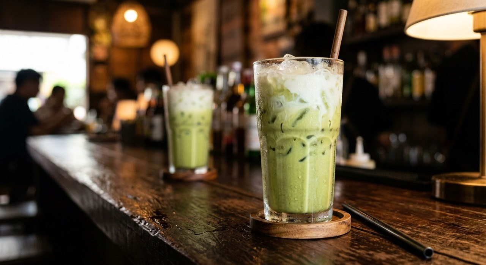

Thai iced green tea — matcha or green syrup, condensed milk and syrup over ice — the green glass of the modern café.

ชาเขียวเย็น — "iced green tea" — exists in two forms in the Thai sources, and both are the same glass. The Kapook version is the modern one: matcha powder shaken with fresh milk, syrup and a spoon of condensed milk, over ice with a milk drizzle. The Bluemochatea café version — the drink Thais actually call นมเขียว, "green milk" — is the exact architecture of nom yen with the syrup swapped: fresh milk, condensed milk and green syrup instead of red. One is tea-forward, one is syrup-sweet; both are the green drink on the café board.
The Kapook roundup frames the family: ชาเขียวนมสด (green tea with fresh milk), ชาเขียวมะนาว (green tea with lime), hot and cold, shaken or stirred. The green tea itself is the constant — and the Kapook method is assembly, not brewing: everything into the shaker or glass together, because the matcha dissolves in the milk and syrup.
The Wongnai matcha guide is the modern café extension: matcha lattes and their ratios, for anyone selling. The sources converge on the important part — cold, sweet, and green enough to read as green from across the room.
| Thai | English | Amount |
|---|---|---|
| ผงชาเขียวมัทฉะ | Matcha powder | 2 tsp |
| นมสด | Fresh milk | 160 ml |
| น้ำเชื่อม | Syrup | 2 tbsp |
| นมข้นหวาน | Sweetened condensed milk | 1 tbsp |
| น้ำแข็ง | Ice | 1 full glass (16 oz) |
| นมสดโรยหน้า | Fresh milk, to drizzle | to finish |
The café นมเขียว (Bluemochatea): 150 ml fresh milk, 30 ml condensed milk, 2 tsp green syrup, evaporated milk drizzled on top — the syrup version of the same glass.
Matcha or green syrup. Kapook brews from matcha powder; the Bluemochatea café recipe is green syrup — the same glass, one tea-flavoured and one sweet-syrup flavoured. Thai cafés sell both as the same drink.
Blended or poured. Phol Food Mafia's มัทฉะเฟรปเป้ blends the matcha, milk, condensed-milk syrup and ice into a thick frappe; Kapook's version is poured over ice with a milk drizzle. Same ingredients, two textures.
Condensed milk or not. Kapook's matcha version takes a spoon of condensed milk with the syrup; the green-syrup version's condensed milk is the whole sweetening. The matcha version could stand on syrup alone.
What it's called. ชาเขียวเย็น, ชาเขียวนมสด, มัทฉะเฟรปเป้ and นมเขียว all describe the green milk drink; the sources use the names interchangeably and only the Wongnai matcha guide insists on "latte" for the modern version.
Lime version. Kapook's roundup includes ชาเขียวมะนาว — green tea with lime instead of milk. Same tea, opposite direction.
This recipe is translated from the following Thai-language sources. Where they disagree, we've said so.
1. Kapook — "10 สูตรชงชาเขียว หลากเครื่องดื่มหอมเข้มจากธรรมชาติ" (the matcha-milk version used here) — cooking.kapook.com
2. Bluemochatea — "สูตร นมเขียวเย็น" (the café green-syrup version) — bluemochatea.com
3. Wongnai — "แจก 10 สูตรชาเขียว-มัทฉะลาเต้ เมนูเครื่องดื่มยอดฮิตทำเองง่าย ทำขายปัง!" (the modern matcha latte roundup) — wongnai.com
4. Phol Food Mafia (สูตรโดย พล ตัณฑเสถียร) — "Matcha Frappe (มัทฉะเฟรปเป้)": 1½ tbsp matcha, 90 ml fresh milk, 60 ml condensed-milk syrup, blended over ice — pholfoodmafia.com
5. Wongnai (from the same roundup) — ชาเขียวมัทฉะลาเต้ลาวา: 1 tbsp matcha dissolved in 1 tbsp hot water, 2 tsp condensed milk, 50 ml fresh milk over ice — the lava-pour version.